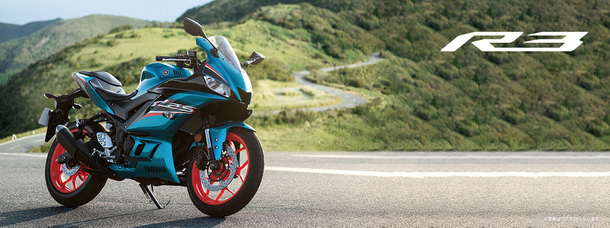

ＹＡＭＡＨＡ ＹＺＦ－Ｒ３
沸き立つ心は止められない

ヤマハ発動機から販売されている320ｃｃの中型ＭＴバイク
特徴紹介
- ヤマハのレースマシンYZR-M1をイメージしたハンドルクラウン
- リアモノクロスサスペンションが生み出すダイナミックな走り
- リアモノクロスサスペンションが生み出すダイナミックな走り
- 軽快なハンドリングと良好な乗り心地ダイヤモンドフレーム＆ロングリアアーム
- 倒立式フロントサスペンションが高剛性と快適性を両立
- 運動性能向上に寄与するタンク&タンクカバー
- YZF-R3はラジアルタイヤを装備
- スポーティー&スタイリッシュYZR-M1直系のR-DNAデザイン
- 快適性と運動性能を調和したライディングポジション
- レースマシンのイメージと性能を継承するフロントフェイス
- 走行風をマネジメントするエアロダイナミクスパーツ
- フル液晶メーターが豊富な情報を見やすく表示
性能比較
| 性能比較 |
ＹＺＦ－Ｒ３ |
ＮＩＮＪＡ400 |
| 総排気量 |
320ｃｃ |
398ｃｃ |
| 価格 |
687,500円 |
759,000円 |
| 最大出力・トルク |
31kW（42PS）29N・m（3.0kgf・m） |
35kW(48PS)37N・m(3.8kgf・m) |
| タンク容量・総走行距離 |
容量14L 距離384.6km |
容量14L 距離359.8km |
実際に乗り感じたこと
長所
実際に乗ってみて感じたことは教習車で乗っていたCB400SFよりも軽く扱いやすい。
低速トルクが厚くなかなかエンストしにくいので初心者でも乗りやすい
他のスーパースポーツバイクより前傾姿勢がゆるくロングツーリングも可能
短所
エンジンブレーキが強くクラッチをうまく使わないとすぐ減速する
ハンドルの切り幅が少し少ない
ミラーが見ずらい
©2022 Shusuke Mori